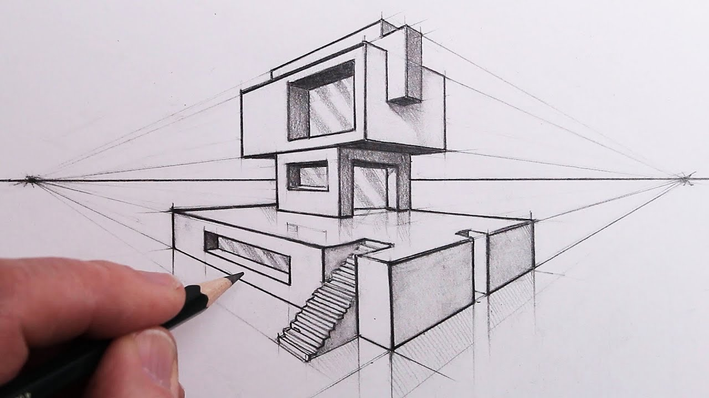

Cartoon drawings typically depict a more comedic or whimsical view of the world. Similar to caricatures, they may use overdramatized shapes and colors to show emotion or tone through images. Artists may use cartoons in illustrations, animation, advertising and graphic design.
Figure drawing
Artists create figure drawings, also known as still-life drawings, by making observations of the physical world. Subjects are often human models, but can also include objects like fruit, vehicles or items in nature. Artists who work in figure drawing try to capture the world as they see it. Art instructors typically use figure drawing to teach fundamentals and help students learn perspective, proportions and shading.
Gesture drawing
Like figure drawing, gesture drawing uses real-life subjects as inspiration. However, gesture drawing focuses on movement and hopes to capture action, form and pose. Often, models or subjects change poses every one to five minutes to enact motion. The shorter the pose, the less an artist can capture, so gesture drawings may be less detailed than other types of illustrations.

Perspective drawing
Artists use perspective drawing, also known as 3D or anamorphic drawing, to create three-dimensional images in a two-dimensional space, such as on paper. Those who use this type of drawing pay attention to distance, space, light, volume, surface and scale to determine how each object relates to one another.
